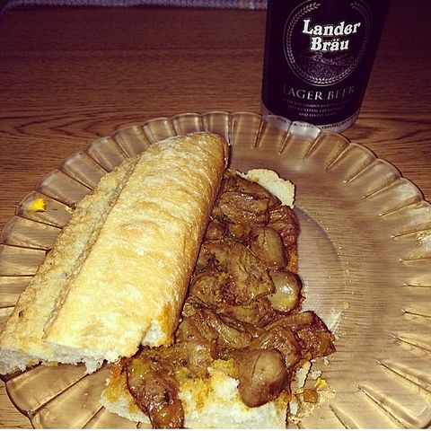
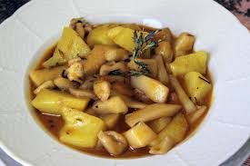
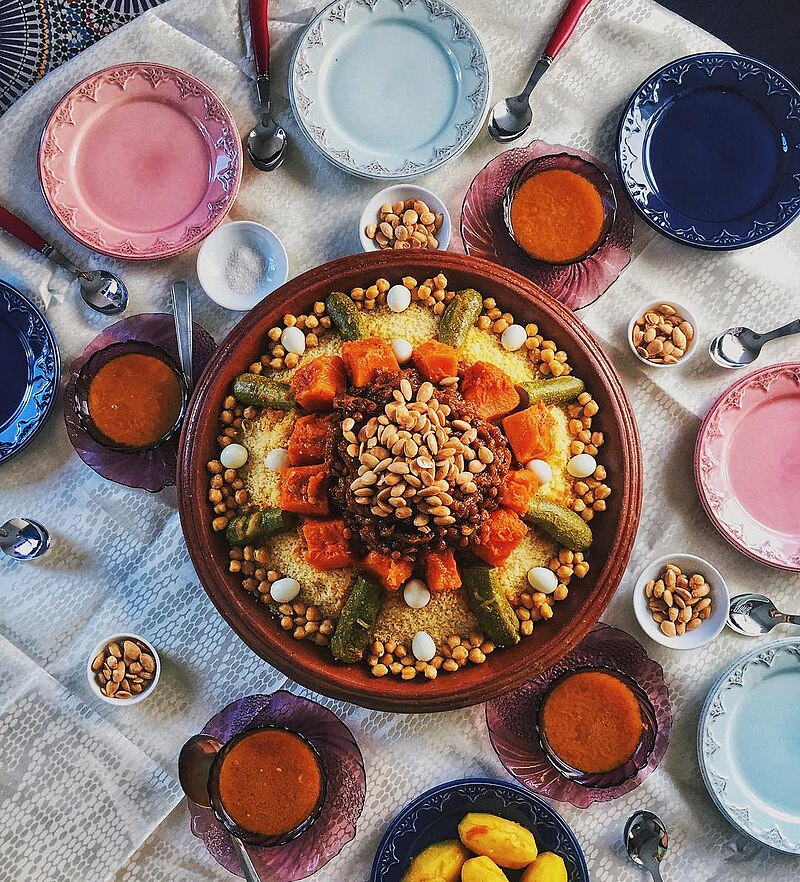
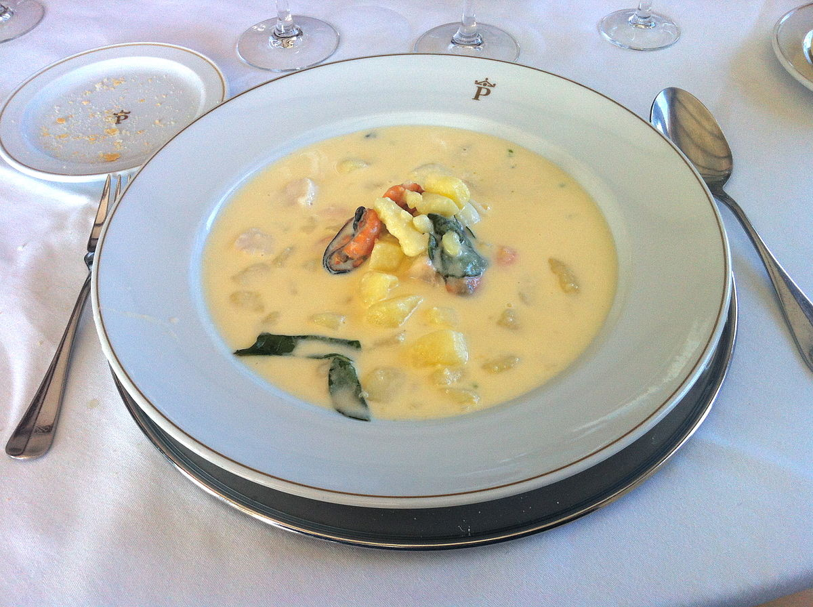

Multimedia
Receta de bocadillo de corazones
Platos tipicos y sus ingredientes
Platos típicos
- Bocadillo de corazones
- Bocadillo de corazones de pollo aliñados con especias
- 
- Papas con choco
- Guiso tradicional de patatas con sepia
- 
- Cuscús de pollo
- Plato hecho a base de sémola con verduras al vapor y carne de pollo
- 
- Gazpachuelo
- El gazpachuelo es una sopa caliente típica de pescadores, consistente en un caldo de pescado y mahonesa a base de yema de huevo y aceite de oliva
- 
Ingredientes más usados
- Pescados y mariscos
- Frutas y verduras
- Chumbos
- Zanahorias
- Cebolla
- Carnes
Culturas que influencian la gastronomía ceutí
- Musulmana
- Judía
- Hindú
- Cristiana
Información nutricional
Valores nutricionales de algunos ingredientes crudos por cada 100g
|
Carbohidratos (g) |
Proteina (g) |
Grasa (g) |
kcal |
| Corazones de pollo |
0,8 |
17 |
5,3 |
120 |
| Patata |
15,71 |
1,68 |
0,1 |
70 |
| Sepia |
0,82 |
16,24 |
0,7 |
79 |
| Pechuga de pollo |
0 |
29,55 |
7,72 |
195 |
| Pan |
50,61 |
7,64 |
3,29 |
266 |